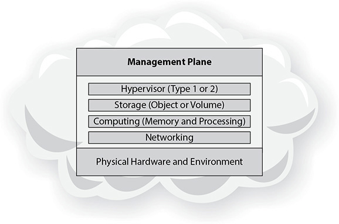
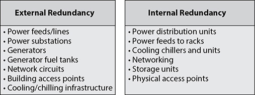
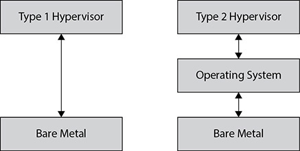
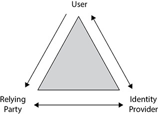
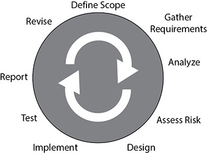

CHAPTER 4
Cloud Platform and Infrastructure Security
This chapter covers the following topics in Domain 3:
• Physical aspects of a cloud environment
• Key components that make up a cloud environment
• Risks associated with cloud computing
• Designing and planning for cloud-based security controls
• Auditing in a cloud environment
• Disaster recovery and business continuity in a cloud environment
Cloud platforms bring unique benefits to an organization and have many attractive capabilities, including performance and scalability, the removal of focus on hardware, the placement of focus on business requirements, and measured service—all for a possible lower total cost and investment than the organization running its own data center. However, these platforms also bring unique challenges and risks because of the very same factors, and cost savings are not always what they may appear to be at the onset, or not on the scale often presumed. This chapter goes over those risks and challenges, how to address and mitigate them, as well as disaster recovery and business continuity requirements and benefits in a cloud environment.
Comprehend Cloud Infrastructure Components
The cloud infrastructure is made up of many of the same components that a traditional data center has, just applied from the perspective of a cloud environment. The cloud infrastructure also adds some unique components, as shown by Figure 4-1.

Figure 4-1 Cloud infrastructure components
Physical Environment
While the model of cloud computing has been a revolutionary technological approach that organizations take for hosting systems and applications, the underlying architecture and requirements in a cloud environment are no different from the traditional data center model; the cloud environment simply abstracts that level of concern and detail from the cloud customer. However, especially with the large public cloud systems, the scale and coordination required in a cloud environment can be far more intricate and complex.
A traditional corporate data center, especially for a large company, will have thousands of computers and incredible cooling and utility needs. With a major cloud environment, you are typically looking at tens of thousands or hundreds of thousands of servers, spread across multiple (sometimes dozens of) physical locations.
Having such large-scale data centers requires enormous power and cooling resources. With the expectations in a cloud environment of high availability and resiliency, all systems must absolutely be redundant and allow maintenance to be performed in a way that does not cause any downtime or create single points of failure during any maintenance periods. With most cloud environments hosting a significant number of customers, any downtime will have enormous impact and be very visible to the customers and to the cloud provider. On the positive side, with so many customers pooling resources and the cloud provider focusing on an infrastructure specifically built for its cloud offerings and not for hosting numerous different types of systems with different needs, economies of scale can be leveraged in a way that an organization hosting its own data center would not be able to do.
Internally, a data center needs redundant power and cooling, and the actual physical grounds have additional redundancy concerns. A cloud provider needs multiple and independent power feeds, on top of typically having generator power and battery backups to serve in the interim or in the event that the power feeds become unavailable. Key needs for cloud redundancy are shown in Figure 4-2.

Figure 4-2 Areas of focus for cloud redundancy
To minimize risk from environmental and natural disaster concerns, a cloud provider should seek out the best possible locations for its data centers, without being bound geographically to a headquarters location or office locations like a typical organization would have to contend with. Because cloud access by definition occurs via networks (and not physical access), as long as a cloud provider has significant and sufficient network bandwidth, the location of a cloud environment can be anywhere in the country or the world to take advantage of cheaper facilities, land, and utilities. Another enormous physical security benefit of a cloud environment comes in the economies of scale with large data centers and the number of customers that leverage them. Sophisticated and redundant levels of security can be very expensive for a data center, but when the costs can be spread among all customers, each customer benefits from far greater and more technologically advanced security than they would be able to afford on their own.
Network and Communications
Networking is essential to a cloud environment because it provides the only way for customers and users to access their systems, applications, and software tools. In the sense of cloud offerings, the network is fully the responsibility of the cloud provider and something that the cloud customer and users will just expect to always work and never have issues.
Networking Hardware
When it comes to building out a network, multiple layers come into play that have their own issues and challenges, even if the customer and users do not really see these aspects. At the basic level are the physical network components such as the actual wiring and cabling. Especially in large data centers, the volume of wiring is extremely high, and often teams are dedicated just to organizing the physical wiring.
Once the physical wiring is in place, it has to be hooked into devices and machines. This forms the next layer of the network in a data center. A large network of switches, routers, and network security devices make up this next level. These are typically constructed in a tiered system that physically segments networks for isolation and security in layers. Segmenting a network physically offers additional security by separating different tiers of servers or restricting traffic within certain sectors. If a successful attack manages to penetrate a data center to the network layer, this physical separation can minimize the extent of vulnerabilities and access.
Beyond the physical segmenting of a network, software/virtual separation is obtained through such mechanisms as virtual local area networks (VLANs). VLANs allow dedicated IP address spacing for servers that are in the same class or belong to the same application or customer, giving enhanced security and isolation from other systems at the network level. VLANs are not dependent on physical network devices and, as such, can span across data centers, regardless of where hardware is physically located; servers do not need to be in the same racks or even connected to the same switches or routers.
Software-Defined Networking
An important aspect of cloud computing is the use of software-defined networking (SDN). With SDN, the decisions concerning where traffic is filtered or sent and the actual forwarding of traffic are completely separate from each other. With cloud computing, this separation is important because it allows the administrators of the cloud network to quickly and dynamically adjust network flows and resources based on the current needs and demands of the cloud customers. With the separation from the actual network components, a cloud provider can build management tools that allow staffers using web portals or cloud administrative interfaces to make changes to the network without having to log in to the actual network components or needing the command knowledge of a network administrator to make changes. With the level of access provided and the types of resources available to control, a high level of security needs to be attached to any SDN implementation, with access tightly controlled and monitored regularly.
Compute
As with a traditional data center model, cloud computing is built around processing capabilities. Simply put, computing and processing capabilities are defined as the CPU and memory (RAM) of the system and environment. In a traditional server setup using physical servers, it is easy to define and manage both resources because each server represents a finite and unique unit, both in configuration and in the ability to run metrics and observe trends. Within a cloud environment, considering resource pooling and multitenancy, the computing capabilities become far more complex in both planning and management. With large virtual environments, it becomes imperative for the cloud provider to build out enormous resources that can be shared among all the systems, applications, and customers, and done in such a way that each has the resources it requires at any given point in time to meet high availability, performance, and scalability demands.
Reservations
A reservation is a minimum resource that is guaranteed to a customer within a cloud environment. A reservation can pertain to the two main aspects of computing: memory and processing. With a reservation in place, a cloud customer is guaranteed by the cloud provider to always have at minimum the necessary resources available to power on and operate any of their services. In large cloud environments with a large number of customers, this feature can be of particular importance in the case of denial-of-service attacks or high-utilization services from other hosts and systems that may use considerable cloud resources because it offers a minimum level of operating guarantee to all customers.
Limits
As opposed to reservations, limits are put in place to enforce maximum utilization of memory or processing by a cloud customer. These limits can be done at either a virtual machine level or a comprehensive level for a customer. They are meant to ensure that enormous cloud resources cannot be allocated or consumed by a single host or customer to the detriment of other hosts and customers. Along with cloud computing features such as auto-scaling and on-demand self-service, limits can be either “hard” or “fixed,” but can also be flexible and allowed to change dynamically. Typically, when limits are allowed to change dynamically based on current conditions and consumption, it is done by “borrowing” additional resources rather than making an actual change in the limits themselves.
Shares
The concept of shares within a cloud environment is used to mitigate and control customer requests for resource allocations in case the environment does not have the current capability to provide these resources. Shares work by prioritizing hosts within a cloud environment through a weighting system that is defined by the cloud provider. When periods of high utilization and allocation are reached, the system automatically uses the scoring of each host based on its share value to determine which hosts get access to the limited resources still available. The higher the value a particular host has, the more resources it will be allowed to utilize.
Storage
Mass storage in a cloud environment from the hardware perspective is not much different than in a traditional data center or server model. Storage typically consists of RAID (redundant array of inexpensive disks) implementations or SANs (storage area networks), which are then connected to the virtualized server infrastructure.
Volume Storage
As covered in Chapter 3, volume storage is where storage is allocated to a virtual machine and configured as a typical hard drive and file system on that server. Although the storage is from a centralized storage system and/or is connected to the network, it will appear to the server as a dedicated resource, much the same as other computing and infrastructure services appear to a virtualized operating system. With a volume storage system, the main infrastructure storage is sliced into pieces called logical units (LUNs), assigned to a particular virtual machine by the hypervisor, and then mounted via a particular method based on the operating system of the host. From the storage allocation perspective, this is only a reserved slice of storage that is given to the virtual machine. All configurations, formatting, usage, and file-system-level security are handled by the particular operating system of the host VM and by the administrators of the host.
Object Storage
As you learned from Chapter 3, object storage is where data is stored on a system separate from the application and access occurs via APIs, network requests, or a web interface. Oftentimes, object storage is implemented as an additional step of redundancy and as a performance measure. By removing the storage from the actual host instances, a cloud provider can focus dedicated resources on managing an object storage system in a way that is specific to optimizing storage performance and security. Object storage also has its own redundancy and scaling systems that are separate from the host and can also be optimized for a particular function or mission.
Rather than a traditional file system with a directory and tree structure, object storage utilizes a flat system and assigns files and objects a key value that is then used to access them. Different implementations of object storage may call this value different names, but in the end it is the same concept—a unique value, oftentimes completely opaque, is used to access data versus using the traditional filename nomenclature. Many cloud providers use object storage for central pieces of infrastructure such as their library of virtual host images.

EXAM TIP Make sure you understand the differences between object and volume storage types that are used with IaaS. There will likely be questions relating to how and when both are used. In particular, make sure you remember that object storage within a cloud will be used for the storage of virtual machine images.
Virtualization
As previously discussed, virtualization forms the backbone of a cloud environment and all its hosting models. Virtualization is what allows a cloud environment to offer most of its top benefits to its customers, especially resource pooling, on-demand self-service, and scalability. The use of virtualization breaks free from the old paradigms and limitations of single servers, where the host is tied to the server. Instead, virtualization allows very large pools of resources to be leveraged across many hosts and applications. Virtualization also allows the abstraction from the hardware via the use of a hypervisor.
Hypervisors
As discussed in Chapter 2 as part of the “Cloud Concepts, Architecture, and Design” domain, there are two types of hypervisors within virtualization: Type 1 and Type 2. An overview of both hypervisor types is shown in Figure 4-3.

Figure 4-3 Type 1 and Type 2 hypervisors
Type 1 Hypervisors As covered in Chapter 2, a Type 1 hypervisor is a native implementation that runs tied directly into the underlying hardware. In other words, it runs natively and directly on top of the hardware with direct access to its components and resources. The Type 1 hypervisor is specifically written and tuned to run on top of bare metal and provide the hosting environment; because of this, it has very tightly written code and is lean overall because it does not have to fulfill any additional requirements. As such, it also allows for much tighter security and controls because there are no additional applications or utilities running within the hypervisor other than those to fulfill its intended mission. Therefore, there are far fewer potential attack vectors and vulnerabilities than a traditional operating system that is designed to be highly flexible would contain.
Type 2 Hypervisors From Chapter 2, you know that a Type 2 hypervisor differs from a Type 1 hypervisor in that it runs under a host operating system rather than directly tied into the underlying hardware of the virtual host servers. With this type of implementation, additional security and architecture concerns come into play as the interaction between the operating system and the hypervisor becomes a critical link. The hypervisor no longer has direct interaction and control over the underlying hardware, which means that some performance will be lost due to the operating system in the middle needing its own resources, patching requirements, and operational oversight. It also means that any security concerns within the underlying operating system can impact the hypervisor as well.

TIP Due to the nature of Type 2 hypervisors and their reliance on the underlying operating system, the Cloud Security Professional needs to be extra vigilant in securing both the hypervisor and the host because of the added complexity. If a cloud provider has robust hypervisor security but is lacking in host security, the entire platform becomes vulnerable and exposed. However, most large and/or public cloud implementations do not use Type 2 hypervisors, so exposure to this type may be well limited. However, care should be taken to know what type is being used.
Management Plane
The concept of a management plane within the context of cloud computing is a bit different from the traditional definition of a network management plane, though the overall concepts are very similar. Within a cloud environment, the management plane is focused on the management of the environment and all the hosts within it. By utilizing the management plane, the cloud provider can manage all the hosts within the environment from a centralized location, without the need to go to each individual server to perform certain tasks. The management plane is typically run from dedicated servers, and it has its own physical connections to the underlying hardware so as to separate out its functions and dependencies from any other aspects of the environment, including the hypervisor.
The management plane can be used to do the bulk of the tasks that enable cloud computing to be the unique technology that it is. From the management plane, virtual servers can be provisioned with the appropriate resources allocated to them, such as network configurations, processing, memory, and storage. Apart from provisioning and allocating resources, the management plane can also start and stop virtual hosts and services.
The functions of the management plane are typically exposed as a series of remote calls and function executions or exposed as a set of APIs. Those APIs are typically leveraged either through a client or more commonly via a web portal. The web portal is typically proprietary within each cloud implementation, with the appropriate underlying scripts and functions for that environment and the level of exposure that the cloud provider wants to make accessible with the management plane.
Given the access and privileges with which the management plane operates, concerns over security are of the highest level. A compromise of the management plane would give an attacker complete control of the entire environment and make the entire cloud vulnerable, which is well above the risk and threat a compromised hypervisor would provide because the management plane controls multiple hypervisors. Only the most highly vetted and limited set of administrative staff should have access to the management plane, and all access and functions should be tightly audited and reviewed on a regular basis.
Analyze Risks Associated with Cloud Infrastructure
Cloud-based systems have the same level of risk as other hosting models, but with the addition of risks specific to cloud hosting. A cloud-based system should be approached and managed as any other outsourced platform, with the same types of concerns, risks, and audit/governance requirements as an external hosting environment.
Risk Assessment and Analysis
A cloud hosting environment has the same areas of risk as all systems and applications, with cloud-specific risks on top of those risks or as key aspects expanding upon them.
From an organizational and regulatory perspective, there are risks related to lock-in, governance, data security and privacy, and any legal and regulatory controls and reporting required for a system or application. One of the biggest benefits of the cloud hosting model is portability and the ability to move between providers at will. If an organization chooses a particular cloud provider that has a lot of propriety requirements, it may get locked into that provider and incur substantial costs later if it decides to switch.
With any external hosting arrangement, a company loses substantial control over its systems and its governance. Even with strong contractual requirements and SLAs in place, the company’s level of control and access will be less than what it would be in its own proprietary data centers. Depending on the regulatory requirements for the type of application and data to be hosted, the choice of cloud provider may be limited, or even nonexistent. Cloud providers have to serve a large number of customers with their business model, which makes complying with several types of certifications and requirements difficult. A primary concern for any company is where its data will be stored and whether sufficient protections are in place to ensure its confidentiality and integrity. A cloud environment presents many challenges for appropriate governance, made even more complicated by possible eDiscovery requirements, depending on the nature and type of the data, that many cloud providers might be unable or unwilling to meet. All these aspects need to be carefully evaluated and weighed prior to making a cloud hosting decision.

NOTE eDiscovery is the process through which electronic data is requested or required by a legal entity for use in a criminal or civil legal proceeding. It is the responsibility of the application or system owner to thoroughly analyze and search for all data that is within scope and pertinent to the official request, and then provide it to the legal entity with a certification that it is complete and secured.
Apart from the risk factors that play into any hosting environment, a cloud environment has additional factors that are unique in nature. A major risk in a cloud environment is ensuring that data can be completely removed from the system when necessary or required. As covered in Chapter 2, in a traditional data center, physical media can be destroyed to ensure data destruction, which is not possible in a cloud environment, so concepts such as cryptographic erasure and overwriting are prominently used. Along the same lines of data protection is the security of system images within a cloud environment. Because the images themselves are just files on a file system without any physical separation of servers, combined with the possibility of malware being injecting into an image even when it is not running, their security becomes important in a cloud environment, where the cloud provider bears sole responsibility for assurance.
With the self-service aspects of cloud computing, an enormous amount of software is involved in running a cloud environment—everything from image creation and deployment, to auditing and reporting tools, to user management and key management. Every piece of software throughout the environment—from full application suites down to small utility scripts—carries with it an inherent risk of compromise and vulnerabilities. This software is also removed from the customer’s visibility and inspection, and it’s solely the responsibility of the cloud provider to ensure its security. Because this is outside the run-time environment of the cloud system in general, in many instances this software will go overlooked in audits and monitoring, and the Cloud Security Professional should apply due diligence when selecting a cloud provider to ensure that they are aware of the risks associated with these tools and have strong auditing and monitoring policies and systems in place. The underlying software running the actual virtual hosts is also certainly susceptible to risk of compromise and vulnerabilities, which will we cover in the following section on virtualization risks. However, the key points include the hypervisor being compromised as well as the potential for guests to break out and access other systems and data in the cloud if security controls are not properly implemented and monitored.
Virtualization Risks
With the added layers and complexities of virtualization also come additional risks not found in a traditional server model.
If a hypervisor were to be compromised in any way, the underlying virtual machines that are hosted by it are also vulnerable. Because the hypervisor has control over the hosts and their access to computing resources, the possibility of malware injections and open attack vectors become pronounced for any virtual machines hosted under or controlled by the hypervisor.
Beyond just the virtual machines connected to the hypervisor, because it does play a central role within the cloud infrastructure, a compromised hypervisor can also be used to attack other hypervisors or components within the same cloud environment. A compromised hypervisor can also be used as a launching pad to compromise virtual machines hosted by other hypervisors that are accessible within the cloud.
Another big risk with virtualization involves how network traffic is handled, monitored, and logged. With a traditional network in a data center with physical servers, communication between the servers has to pass through a physical network appliance such as a switch, even for servers within the same physical rack space. During this transmission, it is possible to log and analyze the network traffic, use intrusion detection systems (IDSs) if desired, and have more control over the actual network flow and security measures. In a virtualized environment, between virtual hosts under the same hypervisor there will not necessarily be this type of transmission where such analysis is possible or logging is implemented. If this is the case within the virtualized environment, either it will have to become an accepted risk or other methods will need to be designed and implemented to maintain the same level of analysis and security monitoring. As cloud and virtualized environments have gained in popularity and use, especially with large and visible production systems, most major vendors now offer virtualized versions of traditional physical network gear, such as switches, firewalls, and IDSs.
A significant difference and potential drawback with a virtualized environment versus a traditional server model is the reality of how images and virtual machines are stored and operate. With a traditional server model, the operating system is deployed on top of the underlying hardware and interacts directly with it. However, in a virtualized environment, a “server” is nothing more than a disk image that resides on an actual file system in some manner or another. While a virtual host is up and running, it is susceptible to all the same types of attacks and vulnerabilities that a physical host would be, based on its operating system and compensating security controls. However, due to the nature of a disk image existing in the environment, there is an extra vulnerability should the disk image itself be attacked from the hypervisor and file system side. From this attack vector, no compensating security controls or monitoring would be effective at mitigating the attack, especially because this method is not dependent on the image even being live or running at the time.
TIP As a Cloud Security Professional, much of your attention should be paid to the actual run-time environment and the protection of data. However, do not overlook due diligence in ensuring that the cloud provider takes substantial steps toward securing the virtualized environment and protecting the hypervisor layer as well as has in place strong security controls and monitoring to ensure that virtual images cannot be modified while in a live or inactive state from the file system level.
Countermeasure Strategies
While the unique challenges and additional risks of cloud computing are well known, so too are the many mitigation strategies that have become commonplace and best practices.
The same high degree of automation that a cloud platform provides between provisioning and reporting can be applied to the implementation of security controls. As systems auto-scale and expand, by using base images for virtual hosts that already have been hardened and scanned, you can ensure that new hosts, as they are brought online, are already secured in the exact same manner as the baseline. The same methodology can be applied within a cloud framework for patching and updating. Rather than performing upgrades and large-scale automated patching, which then require scanning and auditing to ensure everything was applied correctly and comprehensively, a cloud provider can instead opt to reimage the hosts using a new baseline image that has been patched and tested. Instead of thousands of hosts being patched and tested, efforts can be focused on one host and then deployed across the cloud to all others.
Cloud environments are designed to be high availability by nature with redundancy, auto-scaling, and rapid elasticity. This architectural design makes the patching, maintenance, and isolation of hosts in the event of a possible security breach much easier because they can be removed from production pools. It also allows for updating, scanning, and making configuration changes without impacting the customer and users of a system or application, thus reducing the risk to availability.
Design and Plan Security Controls
In order to ensure a sound security policy and overall governance, the Cloud Security Professional should concentrate on several different areas, as detailed in this section.
Physical and Environmental Protection
Physical and environmental protection relates to any and all physical devices and infrastructure components. While the access and technologies used with a cloud infrastructure offer a unique set of services to customers, underneath it is all is a classic data center model, albeit in most cases on a much larger scale. However, because a cloud by definition is a system that is accessible over broad networking, such as the public Internet, physical protections must also extend to those systems that are used to access the cloud.
The physical assets in the actual data center include servers, cooling units, power distribution units, networking gear, physical racks, and miles of cabling, as well as the actual physical facilities and the auxiliary systems located on the premises, such as battery backups, power conduits, generators, fuel tanks, and the surrounding periphery. Outside the data center property there are still more physical devices and infrastructure that are important to the Cloud Security Professional. These include the power and network conduits that the data center relies on, as well as the endpoints of access for the users and customers, such as mobile devices, workstations, laptops, tablets, and any other client systems.
From a physical perspective, the approach to security is no different than in any other system, with defense in layers being the guiding principle. Around the outside of a data center building, you will have typical security measures such as fences, cameras, lights, vehicle access control and barriers, as well as personnel stationed at various locations. Access to the interior of the buildings should be tightly controlled by personnel, doors, key card access, identity proofing, and other various aspects that are similar to how you would gain access to an IT system, including multifactor authentication, in the form of badges, codes, biometrics, and so on. Once inside, access to the actual floor space where the systems reside should be further controlled and restricted by the use of cages and sectioning, as well as employing different levels of access control and monitoring. In some cases, there may be contractual or regulatory requirements to have different types of systems segmented off from others in physical cages, depending on the type of system, the jurisdictions that have authority over it, and the type of data that it stores and consumes.
Any utilities and facilities that the data center depends on, especially in regard to power and cooling, should be redundant both inside and outside the data center. From the outside there should be multiple independent power supplies coming into the data center. Inside the data center, the power distribution units that send power to the racks and servers should also be redundant. This way, whether there is a power failure internally or externally, there are independent redundant power supplies. The same applies to the network, with independent network feeds and redundancy both internally and externally.
Extensive and rigorous background checks should be employed for any personnel allowed access to the center in any capacity. Along the same lines of system security, personnel should be granted physical access based on the least privilege principle. Even with personnel, it is crucial to have proper monitoring and reviews in place, as well as continual training to remind them of policies, procedures, and proper safeguards.
System and Communication Protection
Although the cloud infrastructure is presented to the customer via virtualization, underneath is the same real hardware and systems that would be present in a traditional data center. Depending on the type of cloud hosting model employed, there are varying degrees of customer exposure and responsibilities.
While the cloud provider is responsible for the underlying hardware and network regardless of cloud service model, the remaining services and security responsibilities either lie with the customer or are split between the customer and cloud provider. It is incumbent on the Cloud Security Professional to clearly know the demarcation lines between the customer’s and cloud provider’s responsibilities, which should be clearly articulated and documented in the contracts and SLAs.
As with any application, the protection of data is a primary concern, and different methods are needed for different states of data:
• Data at rest The main protection point for data at rest is through the use of encryption technologies.
• Data in transit With data in transit, the main methods of protection are network isolation and the use of encrypted transport mechanisms such as TLS.
• Data in use Data in use is protected through secure API calls and web services via the use of encryption, digital signatures, or dedicated network pathways.
Virtualization Systems Protection
As previously discussed, virtualization forms the backbone of any cloud infrastructure and allows for many of the features that make a cloud environment a unique and popular technology and platform. Given the visible and important role that virtualization plays, the components and systems that make up the virtualized infrastructure are the most obvious and attractive targets for attackers.
The management plane, with full control over the environment and exposed APIs for allowing administrative tasks, is the most visible and important aspect to fully protect. The management plane is made up of a series of APIs, exposed function calls and services, as well as web portals or other client access to allow its use. Any and all of these points are potential vulnerabilities. The Cloud Security Professional needs to develop a holistic picture of threats and vulnerabilities at each level and for each component of the management plane. If the Cloud Security Professional does not break down each component to realize its particular vulnerabilities and threats and then form them together into a comprehensive view, the entire system could be impacted due to the possibility of a missed weakness.
As with any system, role-based access controls are extremely important with the management plane and virtualization infrastructure. All administrative access must be tightly controlled as well as regularly and comprehensively audited. Very detailed logging should take place not only at the level of each piece of the virtualization infrastructure, but also at the level of the web portal or wherever the client accesses the management plane. All logs should be captured in a way where they are removed, indexed, and evaluated away from the actual system itself. This allows log preservation if the actual component is compromised, with sufficient administrative access to modify or delete the logs that are local in nature.
Apart from maintaining cloud features such as auto-scaling and resiliency, a major function of the virtualization environment and infrastructure is to promote and maintain multitenancy. Allowing for multitenancy is not a major challenge from a creation and implementation standpoint because, at its root, multitenancy is a management task versus a technological task. From a virtualization standpoint, virtual machines are just hosts; there is no dependency on what kind of customer or contractual requirements they contain. Where the importance of controls comes into play with multitenancy is the requirement to keep tenants separate and protected from each other. This includes keeping system interaction and security isolated between tenants, as well as resources and utilization, to ensure that all tenants have what their particular systems and applications need to meet contractual and SLA requirements.
While logging and auditing are certainly important to security, these are reactionary mechanisms and do not prevent an actual vulnerability from being exploited initially. Many of the same approaches and strategies that are used at the system level in a traditional data center also are adapted for a virtualization infrastructure in a cloud environment. A prime example is the establishment of trust zones, in the same manner a network separation between servers and systems would be implemented as a defensive layering strategy. Trust zones can be segmented in a variety of ways, depending on the particular needs of the environment or customer contracts. Before implementing trust zones, the cloud provider should undertake a rigorous threat and vulnerability assessment to determine where weaknesses are in its infrastructure and where trust zones could be beneficial. You do not want to take an approach based on practices from other cloud providers without knowing and understanding your own cloud environment first. Going down that path may lead to a false sense of security, to additional complexity where it’s not needed, and even to risks and vulnerabilities that were not present before due to the addition of unnecessary components and mechanisms.
Trust zones can be established and segmented using many different strategies. The most common way involves separating out the different tiers of the system architecture (for example, you could separate the web/presentation, application, and data zones of the infrastructure). This allows each zone to have its own protections and monitoring using tools and strategies that are pertinent and specific to its actual needs and functions. It allows the application and data zones to be isolated from external network access and traffic, thus further adding security controls and enhancements.
With this isolation and segmentation, those responsible for managing the systems will need access beyond just what the applications need to operate. Although communications channels will be open internally for the applications to function, that does not facilitate what an administrator needs to gain access, and under no circumstances from a security perspective would you want to open external connectivity for administrative access. The most common ways to allow administrator access in such a configuration is through the use of virtual private networks (VPNs) or jump servers. With a VPN connection, administrators can use most native methods and protocols to access their hosts because they will be secured from their device up to the inside of the cloud environment, and thus not exposed to the public Internet. The VPN connection will have its own authentication and authorization mechanisms, and it will use encrypted communications tunneling, thus adding additional layers of security. With jump servers, the concept is to have a server in the environment that is open and exposed to the public Internet to which administrators can connect and have access internally to the appropriate resources. This method allows security to be focused on the jump server rather than all servers, and it allows the appropriate access controls, monitoring, and logging to be put in place on a much smaller and more specialized scale. The security of the jump server becomes imperative, but it does remove the security concerns directly on the hosts themselves, and it allows the administrators to connect without the need for VPN software and profiles. Another concept that is often used is that of a bastion host. A bastion host is a server that is fully exposed to the public Internet; it is extremely hardened to prevent attacks and is usually focused for a specific application or usage only. This singular focus allows for much more stringent security hardening and monitoring. However, these implementations can, and often are, used together for additional security.
Identification, Authentication, and Authorization in a Cloud Infrastructure
Like applications, cloud systems require identification, authentication, and authorization. However, this need is also extended to include nonperson entities such as devices, clients, and other applications. Federation is another important aspect of cloud computing, especially with public clouds that have a large number of customers and users. It allows the use of “home” or “native” systems to provide identification and authentication, without needing a user base to establish credentials with the cloud provider(s).
Federation
Federation involves a standard base of policies and technologies being employed by different organizations so that they can join their identity systems and allow applications to accept their credentials while still maintaining their autonomy. By establishing policies and guidelines that each member organization must adhere to, trust is established with identities provided by each member organization, and each application that accepts them has the understanding that the sufficient level of background checks and proofing has already been followed and approved under each identity provider. When a system or user who is part of a federation needs to access an application that accepts credentials from that federation, that system or person must obtain local tokens through their own authentication process, which are then passed to the application for acceptance and access. The members that participate run their own “identity providers,” and the systems that accept them are known as the “relying party.” The typical relationship flow between the user, identity provider, and relying party is shown in Figure 4-4.

Figure 4-4 The relationship flow within a federated system
Identification
As covered briefly in Chapter 2, identification is the process of singling out an entity—either a person or system/application—in a manner that makes them unique from any other identity. In pretty much all organizations there is already an established identity system, usually based on some form of LDAP. Many organizations, such as academic institutions, small businesses, and nonprofits, tend use open source or other similar identity systems, versus the corporate world where proprietary and commercially supported systems such as Active Directory tend to be the dominant players. With the emergence of large public cloud systems, many organizations and cloud providers have moved toward the OpenID and OAuth standards. Regardless of which particular flavor of identity provider is used by an organization and consumed by the relying party, the vast majority employ the SAML (Security Assertion Markup Language) and WS-Federation standards for passing identity information.
NOTE Because many large companies and prominent cloud providers have moved toward OpenID, it would be well worth your time doing some additional exploration on the subject so that you have a good understanding of how it works. More information can be found at http://openid.net/.
Authentication
Whereas identification establishes a unique presence of an entity or person, authentication is the process by which one can be certain that the identification presented is true. By policy, this is done to an extent that a system can properly trust the access request. As previously discussed, this can be done through a variety of methods—from the basic user ID/password combination for lower security levels, to strong multifactor authentication, which should be used in all instances possible, but always for administrative and privileged access. The process of authentication is handled by the identity provider.
EXAM TIP Make sure you remember the use of multifactor authentication in all instances where authentication is performed, but it’s especially crucial with administrative and privileged account users. You are very likely to see multiple questions about what multifactor authentication is, where it is used, and why it is essential to promoting security best practices.
Authorization
Once an identity has been established and authentication satisfied to the extent required, authorization grants the actual roles and entitlements appropriate for the user or system process to gain access to data and applications. During the authentication process, the identity provider sends certain predetermined attributes about the user to the relying party. The relying party then uses this information (name, location, job title, and so on) to determine the appropriate level and type of access to grant, or whether to grant access at all. The relying party, even in a federated system, makes this determination because it is tied to the actual application, and it makes the decisions based on the policies, requirements, or regulations of the data being accessed.
In making a determination as to whether to grant access and what level of access, the application can take from the identity provider any number of attributes about the entity. The determination can be based on a single attribute, all the way up to complicated conditionals and combinations of attributes.
As an example, take the case of a library system with online journals at a university. In most cases, the sole requirement for access based on the licensing agreements is that the individual be affiliated with the university, and the exact type of affiliation is not important. In this instance, the mere acknowledgment from the identity provider that the person is in fact a valid affiliate of the university satisfies the licensing requirements of the relying party, so access is granted.
On the opposite end of the spectrum, some systems and applications use very complex decision-making algorithms to determine what level of access to grant. For example, an application that a corporation runs may allow immediate access for those on the corporate network but require more extensive validation for those not on the corporate network. As a first conditional step, the relying party can check where the user is connecting from. If the user is on the corporate network, access may be granted immediately. If the user is not on the corporate network, the relying party may require the user to authenticate through the identity provider. Upon successful authentication, the identity provider will provide the relying party with more information about the user to determine access.
No matter which route an entity attempts for access, the principles of least privilege and risk assessment must be adhered to through policy and auditing. Every access to a system is based on a risk assessment for data security, which is established by company policy and the manner in which access is attempted. If the party presents credentials and attributes that align with what has been determined as an acceptable risk to the data, then access may proceed.
Audit Mechanisms
Auditing in the traditional sense involves the ensuring of compliance with policy, guidelines, and regulations. Audits are performed from a security perspective to measure effectiveness at meeting security controls from a variety of sources that together form the entirety of the security requirements for a system or application. In many instances this will include internal security policy requirements, contractual requirements, regulatory requirements from the local, state, or federal government, as well as any industry or organizational requirements such as PCI DSS. Auditing is performed by analyzing security control requirements, meshing those with configurations and internal policies, and then collecting logs, screenshots, data sets, or anything else to prove and show compliance to the satisfaction of management, customers, or independent/government auditors.
In today’s IT climate, auditing is also employed for an ever-growing list of reasons beyond the traditional requirements. Audits are used for ongoing security compliance and testing from an internal perspective, and are also increasingly used to provide evidence of value and performance to customers and clients. They can be used far beyond security compliance to show system performance, uptime, user access and load, and virtually any other metric that can be collected and quantified.
Within a cloud environment, auditing presents additional challenges and complexities over a traditional data center and hosting model. Cloud environments are large and distributed hosting platforms, in many instances spanning multiple data centers and even multiple countries and jurisdictions. Many systems are also hosted in a hybrid cloud setup where they span multiple cloud providers and/or hosting models, or are even a combination of cloud and traditional data center hosting configurations. Depending on the cloud model used (IaaS, PaaS, or SaaS), the audit scope will be defined based on the level of access a customer has and the level of information that will be supplied contractually by the cloud provider. The contract and SLAs between the cloud provider and cloud customer should clearly spell out the requirements for auditing and the delineation of responsibilities between both sides, as well as the frequency for any audit testing and reporting. Because a cloud is a multitenant environment, in almost all cases any penetration testing or audit testing must be coordinated between the cloud provider and the cloud customer to ensure that the tests do not conflict with or harm the needs of any other cloud customers hosted in the same environment.
Because the underlying cloud systems and architecture are controlled by and are the responsibility of the cloud provider, any audit requirements will have to be clearly spelled out in the contract and with support and assistance provided by the cloud provider. With large public clouds especially, hosting hundreds or even thousands of different customers, there is no way for each customer to do their own exhaustive audits in any appreciable sense. The cloud customer will need to rely on audits commissioned on behalf of the cloud provider and have contractual language in place requiring them to be done. Typically, a cloud provider will have the cloud environment audited by a large reputable firm that meets the requirements of the cloud provider’s individual tenants and customers, and will provide reports of sufficient detail to meet those audit expectations. A prominent method a cloud provider can use is to have its cloud environment certified under rigorous standards, such as those discussed in Chapter 2. If well-known and established standards are used, the cloud customer can accept the certification as evidence of security control implementations, policies, and ongoing audit requirements being met by the cloud provider.
An advantage a cloud provider has is to leverage its self-service capabilities to provide a set of auditing tools and reports to its customers. Through its self-service portal, the cloud provider can enable customers to access a suite of prebuilt reports, log-collection capabilities, and scripts that provide metrics for a large collection of control testing and data points. This enables the customer to collect audit reports and evidence from these tools whenever needed, without having to engage the cloud provider or auditors to do so.
Another big advantage for audit compliance that a cloud environment enjoys is the use of virtualization and server images. The cloud provider or cloud customer has the ability to construct a base image with all the security controls already implemented and tested, and then use that image to deploy any other hosts within the environment. This drastically cuts down on the time and effort a traditional data center would require for each server to be built and the need to have the baselines applied and tested before the server is deemed ready for use. In a cloud environment using the same identical image, the customer knows that each host instance from the onset is fully compliant and configured correctly to meet their security baseline requirements. The image can also be built to contain monitoring tools or data collection tools as well, so that as hosts are brought online, especially through auto-scaling, these capabilities are already established and running from the start. Having these hooks established on each server plays a big part in having self-service auditing capabilities and continual monitoring capabilities as well, without having to take the time to ensure they are installed, configured, and running properly in each instance.
Log Collection
Log collection within a cloud environment presents additional challenges beyond those in a traditional data center. While the same methods can typically be used for aggregating logs in both scenarios, the overriding challenge in a cloud environment pertains to what logs the customer has access to, with the level of access being highly variable, depending on the type of cloud deployment and contract with the cloud provider.
Within an IaaS environment, a cloud customer will have the most access to logs from an operating system and virtual device level, along with all logs from the platform and application levels. This would require an implemented strategy to collect and aggregate the logs. However, this would not give access to logs from the hypervisor or broader network levels unless provided by the cloud provider through the contract terms.
Within a PaaS environment, the same level of comprehensive logs would be available to the customer at the platform and application levels, but not necessarily at the operating system and network device levels, unless made available by the cloud provider. The same issues are present at the application level within a SaaS environment.
Packet Capture
Packet capture in a cloud environment involves many of the same challenges that log collection presents. The level of packet capture available will be dependent on the level of cloud deployment and control over the necessary network appliances, as well as at what point capture is desired.
If packet capture is needed on the virtual machine, and within an IaaS environment, the cloud customer likely has the level of access they need. Within a PaaS or SaaS environment, though, they would be completely dependent on what services are available from the cloud provider. If packet capture is needed within the network or between network devices, access will be highly variable and dependent on the contract terms. In all instances, if packet capture is needed higher up the network level, or with border routers, the involvement of the cloud provider will be necessary.
Disaster Recovery and Business Continuity Management Planning
A cloud environment represents a natural opportunity for a robust business continuity and disaster recovery (BCDR) program for any organization due to its constructs around resiliency, portability, interoperability, and elasticity. However, the cloud environment also presents its own unique challenges, as we will discuss next.
Understanding the Cloud Environment
A cloud environment can be used for BCDR in a few different types of scenarios, such as hosting for either the primary or the BCDR site as a traditional data center or a cloud environment, or both environments being hosted in cloud environments.
The first scenario is where an organization has its primary computing and hosting capabilities in a traditional data center and uses the cloud to host its BCDR environment. This type of plan would typically revolve around already existing BCDR plans the organization has in place, where the cloud environment takes the place of the failover site should the need arise, versus having a BCDR site at another data center. This scenario leverages the on-demand and metered service aspects of a cloud platform, which makes it a very cost-effective method. With a traditional BCDR plan and a secondary data center, hardware must be procured and available for use, usually in a dedicated fashion, making costs significantly higher and requiring far more substantial prep time. Of course, as we discussed previously, extra care is required in going from a data center model to a cloud model to ensure that all security controls and requirements are being met, and there is no reliance on local security controls and configurations that cannot be easily duplicated or duplicated at all in a cloud environment.
NOTE Apart from the cost benefits of not having hardware standing by and ready at a BCDR site is the benefit of being able to test and configure without having staff onsite. Traditionally, BCDR tests involve staff traveling to the location to configure equipment, but in a cloud environment everything is done via network access. However, do not overlook the fact that in a real emergency, unless staff is geographically dispersed already, some travel may be required if network access is not available at the primary location.
A second scenario is where a system or application is already hosted in a cloud environment, and a separate additional cloud provider is used for the BCDR solution. This would be used in the case of a catastrophic failure at the primary cloud provider, causing the migration of all servers to the secondary cloud provider. This requires the Cloud Security Professional to fully analyze the secondary cloud environment to ensure it has the same or similar security capabilities to satisfy the risk tolerance of the company. Although the system and applications may be portable enough that they do not suffer from vendor lock-in and can easily move between different cloud environments, the secondary cloud environment may offer completely different security settings and controls from the primary environment. There is also the need to ensure that images from one cloud provider can be used by the other cloud provider, or there is additional complexity in preparing and maintaining two sets of images should a sudden disaster occur. As with any BCDR approach, there is the need to have data replicated between the two cloud providers so that the necessary pieces are ready in the event of a sudden disaster. Many times this can be implemented by using the secondary site to back up the primary site.
A third scenario is where an application is hosted in a cloud provider and another hosting model is used within the same cloud provider for BCDR. This is more prevalent with large public clouds that are often divided geographically because it provides resiliency from an outage at one data center of the cloud provider. This setup certainly streamlines configuration and minimizes configuration difficulties for the customer, because both locations within the same cloud provider will have identical configurations, offerings, options, and requirements. This differs in regard to having a BCDR configuration between different cloud providers or data centers in that vendor lock-in is not a prevailing concern.
Understanding Business Requirements
Three big concepts are crucial to determining the business requirements for BCDR, whether implemented with a traditional data center model or a cloud hosting model:
• Recovery point objective (RPO) The RPO is defined as the amount of data a company would need to maintain and recover in order to function at a level acceptable to management. This may or may not be a restoration to full operating capacity, depending on what management deems as crucial and essential.
• Recovery time objective (RTO) The RTO is a measurement of the amount of time it would take to recover operations in the event of a disaster to the point where management’s objectives for BCDR are met.
• Recovery service level (RSL) The RSL measures the percentage of the total, typical production service level that needs to be restored to meet BCDR objectives in the case of a failure.
EXAM TIP Be sure to know the difference between these three concepts and to recognize them by their acronyms.
These three measures are all crucial in making a decision as to what needs to be covered under the BCDR strategy, as well as the approach to take when considering possible BCDR solutions. The prevailing strategy for any company will constitute a cost–benefit analysis between the impact of downtime on business operations or reputation versus the costs of implementing a BCDR solution and to what extent it is done.
Management first needs to determine the appropriate values for RPO and RTO. This step serves as the framework and guidelines for the IT staff and security staff to begin forming a BCDR implementation strategy. These calculations and determinations are completely removed from the possible BCDR solutions and are made strictly from the business requirement and risk tolerance perspectives.
Once management has analyzed and assigned requirements for the RPO and RTO, the organization can set about determining which BCDR solutions are appropriate to meet its needs, weighed against cost and feasibility. While this entire analysis is agnostic of the actual solution, there are some key aspects of cloud computing, spanning multiple areas of concern, that need to be addressed.
A primary concern when it comes to BCDR solutions in the cloud goes back to two main regulatory concerns with cloud hosting in general—where the data is housed and the local laws and jurisdictions that apply to it. This can be a particular concern for those opting for a model with a traditional data center and then using a cloud provider for their BCDR solution, where they are moving into an entirely different paradigm than their production configurations and expectations. However, it also plays prominently in the other two scenarios, because even within the same cloud provider, the other data centers will be in different geographic locations and possibly susceptible to different jurisdictions and regulations, and the same holds true for using a different cloud provider.
Understanding Risks
With any BCDR plan, there are two sets of risks—those that require the execution of the plan in the first place, and those that are realized as a result of the plan itself.
Many risks could require the execution of the BCDR plan, regardless of the particular solution the company has opted to take. These risks include the following:
• Natural disasters (earthquakes, hurricanes, tornadoes, floods, and so on)
• Terrorists attacks, acts of war, or purposeful damage
• Equipment failures
• Utility disruptions and failures
• Data center or service provider failures or neglect
Apart from the risks than can lead to the initiation of a BCDR plan, there are also risks associated with the plan that need to be considered and understood:
• Change in location Although cloud services are normally accessed over broad networking, a change in geographic hosting location in a BCDR situation can cause network latency or other performance issues. This can impact both the user and customer perspectives when it comes to the system or application, as well as the business owner’s ability to update and maintain data, especially if large data updates or transfers are required. Latency can also implement timing issues between servers and clients, especially with many security and encryption systems that rely heavily on time syncing to ensure validity or timeout processes.
• Maintaining redundancy With any BCDR plan, a second location will need to be maintained to some extent, depending on the model used and the status and design of the failover site. Both sites will need additional staffing and oversight to ensure they are compatible and maintained to the same level in the event an unforeseen emergency happens without notice.
• Failover mechanism In order for a seamless transition to occur between the primary and failover sites, there must be a mechanism in place to facilitate the transfer of services and connectivity to the failover site. This can be done through networking changes, DNS changes, global load balancers, and a variety of other approaches. The mechanism used can involve caching and timeouts that impact the transition period between sites.
• Bringing services online Whenever a BCDR situation is declared, a primary issue or concern is the speed at which services can be brought online and made ready at the failover site. With a cloud solution, this typically will be quicker than in a traditional failover site because a cloud provider can take advantage of rapid elasticity and self-service models. If the images and data are properly maintained at the failover site, services online can brought quickly.

CAUTION A common practice is to leave images offline at the BCDR site when not in use. This can cause major problems in the event of a BCDR situation if the system images are not patched and up to date with configurations and baselines for the production systems. If the images are to remain largely offline, the Cloud Security Professional will need to ensure that appropriate processes and verifications are in place with images at the BCDR site.
• Functionality with external services Many modern web applications rely on extensive web service calls out to other applications and services. With a BCDR situation, a crucial concern is ensuring that all hooks and APIs are accessible from the failover site in the same manner and at the same speed as they are with the primary location. If there are keys and licensing requirements to access services from the application, those also must be replicated and made ready at the failover site. If the service has checks in place for the origination of IP addresses or some other tie into actual hosts and locations, the company will need to ensure that the same service can be accessed from the failover site with whatever information necessary already available and configured. Although the failover cloud site may have on-demand and self-service capabilities, it is likely that any external tie-ins will not have the same capabilities and will cause complications while the staff is trying to get their own services up and running.
Disaster Recovery/Business Continuity Strategy
Once management has determined the requirements for the BCDR plan, weighed the appropriate risks and issues, and made the necessary decisions, it is time to create the BCDR plan, the implementation steps and processes for it, and the ongoing testing and validation plan. The continual process of the BCDR strategy is shown in Figure 4-5.

Figure 4-5 The BCDR continual process
In order to create a BCDR plan for a system, we must take into account all previous material we have covered in this section. The steps for the actual formulation of the plan from the perspective of the Cloud Security Professional are discussed next.
Define Scope
The first step in plan formulation is to ensure that security concerns are an intrinsic part of the plan from the start, rather than trying to retrofit them into the plan after it is developed. This allows security to clearly define the roles and areas of concern during the planning and design phase and to ensure that proper risk assessments are conducted and accepted by management along the way.
Gather Requirements
Requirements gathering takes into account the RPO and RTO objectives we previously discussed. This determines what needs to be included in the plan as well as gives a sense of what types and models of solutions are necessary to meet those objectives. From the perspective of the Cloud Security Professional, the determination of critical systems and the time necessary to establish operations in the event of a BCDR situation requires the analysis and application of threats and vulnerabilities that pose a risk to the data and systems. Regulations, laws, policies, customer expectations, and public relations will all play a role in this determination for possible solutions.
Analyze
This step is where the requirements and scope are combined to form the objectives and roadmap for the actual plan design. This step involves a thorough analysis of the current production hosting location for the system or application, a determination of components that need to be replicated for a BCDR situation, and the areas of risk associated with that. With moving to a new environment, new risks are inevitable due to differences in configurations and support models, as well as new hosting staff who do not have a history or familiarity with the application or system. A primary concern with moving to a secondary host provider for BCDR reasons is whether it can handle the load and expectations for the system or application like the primary production hosting arrangement does.
Assess Risk
In any IT system, regardless of hosting circumstances or providers, risk assessments are an ongoing and continual process to ensure security compliance and regulatory requirements. Here’s a list of the main risks that are assessed:
• Load capacity at the BCDR site Can the site handle the needed load to run the application or system, and is that capacity readily and easily available? Can the BCDR site handle the level of network bandwidth required for the production services and the user community accessing them?
• Migration of services Can the BCDR site handle the bandwidth and requirements to get the production services mirrored and configured in a timely manner? If there are huge data sets, will incremental copies be performed regularly versus having to do a single large transfer at the time when services are down? How many services will be on standby and can be rapidly deployed and expanded when needed?
• Legal and contractual issues Are appropriate SLAs and contracts in place with the BCDR provider, and do they meet all the requirements the application or system owner must comply with for legal or regulatory reasons? Is all appropriate licensing in place—either system and software licensing or licensing to access external web services or data sources?
Design
The design phase is where the actual technical evaluation of BCDR solutions is considered and matched to the company’s requirements and policies. In many aspects, the requirements are the same as what procuring a primary production hosting arrangement would entail. Both the technical and support requirements need to be firmly established and articulated in contracts, SLAs, and policies. This includes identifying the owners of each aspect of the system and process, the technical contacts, and the required turnaround times for service expectations. The plan must include the specific requirements that define when the BCDR situation would be declared and the plan put into motion so that the business owner and the hosting environments understand their requirements and what preparations are necessary. Other absolutely crucial parts of the plan are how the testing of the plan will be conducted and how the restoration of services back to the steady production state will be handled once the appropriate time arrives.
Implement the Plan
Once the plan and design have been fully vetted and filled in, the actual implementation of the plan will likely require changes from both technical and policy standpoints.
The actual production applications and hosting may need to be augmented or modified to provide additional hooks or capabilities to enable the BCDR plan to work. This can include system configuration modifications to bring the two hosting environments more in synergy, or providing data replication and configuration replication services to the BCDR host for continual updating and maintaining consistency. From this point forward, the BCDR planning and strategy should be integrated as a key component of ongoing management of IT services and all change and configuration management activities.
NOTE The idea of having to make modifications to existing production platforms in order to implement a BCDR solution is one that is often dismissed outright by management. Often, very good and sound solutions may get overlooked because management is set on finding a solution that can simply be dropped into place without incurring additional costs or modifications to existing systems. As a Cloud Security Professional, be sure to perform a cost–benefit analysis as to the extent of modifications required and the benefits that even minor modifications may bring to the overall organization.
Test the Plan
Once a BCDR plan is established, designed, and implemented, it can only really be considered sound and valid once testing has been performed to ensure its accuracy and feasibility. Also, testing should not be considered a one-time activity. As systems change, new versions of code and configurations are rolled out, new data is added, and any other typical activities are done that denote change over time within a system or application, testing is required as an ongoing activity to ensure the plans are still valid and accurate. Testing essentially turns the plans and designs from theory into reality should a real event occur. It not only confirms planning and expectations, but also serves to provide the staff with experience and familiarity with the overall steps before they are executed in a real emergency situation.
With any test, the primary goal is to ensure that the RPO and RTO goals are achievable with the plans that have been designed and implemented. The testing plan should clearly define the scope of the tests, the applications involved, and the steps taken to replicate or simulate an actual BCDR situation. The tests should involve well-defined and plausible situations that simulate real disaster situations of varying degrees and with multiple variables at play. Tests should be conducted at least once a year, and more frequently if required by any certifications, laws, regulations, or policies. Tests should also be conducted whenever major system or configuration changes are made to ensure their continued validity. It is also crucial to ensure that BCDR validation tests do not impact current production capabilities or services. These tests should be done in a way to minimize any disruption to business operations and staffing.
When developing the test plan, staff should closely follow the objectives and decisions made as part of the RPO and RTO analysis and the steps designed to satisfy them. The test should evaluate each component of the plan to ensure that it is necessary, feasible, and accurate for a real-world situation. Starting at the beginning of the plan and going through each step in sequence, the tests can show any deficiencies or incorrect assumptions, thus providing feedback for augmenting the plan with the discovered issues. Once corrected, the test plans should be run again to test the changes within the scope of how an actual event would unfold.
It is imperative that testing not just be done in a one-way manner. Although testing to ensure that failover to a BCDR site is well documented, planned, and validated is important, it is equally important to fully test the recovery path and restoration of original production services as well. Without the restoration testing, a company could find itself running an alternate hosting arrangement and unsure of how to get back to normal operations, thus further impacting its business operations or data protection and security, as well as incurring potentially substantial additional costs and overhead of both staff and money.
Report and Revise
Once the testing has been completed, a full and comprehensive report detailing all activities, shortcomings, changes made during the course of testing, and the results of the effectiveness of the overall BCDR strategy and plan should be presented to management for review. Management will evaluate the effectiveness of the plan, coupled with the goals and metrics deemed suitable and the costs associated with obtaining such goals. Once management has had a full briefing and the time to evaluate the testing reports, the iterative process can begin anew with changes and modifications to the BCDR plan.
Exercise
As a senior security officer within your company, you have been tapped to be part of a technical review committee to evaluate new disaster recovery solutions. You currently host your systems in a traditional data center that your company runs, but the committee has been told that system availability and reputation are the top priorities right now, and all options are on the table. Many committee members seem eager to jump to a cloud solution based on what they have heard about the financial benefits alone.
1. From a security perspective, what are the first steps you should advise the committee to consider?
2. Because all options are on the table, how do you formulate a plan to consider a cloud for a BCDR solution, and what impacts might this have on the current hosting model being employed?
3. How do you plan to drive and articulate concerns that must be considered with any cloud solution, weighed against the enthusiasm of others to push toward it based solely on costs?
Chapter Review
In this chapter, we covered the major pieces of the cloud infrastructure and the risks associated with them specifically, and with a cloud environment in general. We explored the various types of security designs and controls that are implemented to counter these risks, as well as the mechanisms and approaches available within a cloud environment to audit them for effectiveness and compliance. Lastly, we covered the very important topic of disaster recovery and business continuity planning, how it is similar and different with a cloud hosting configuration, and how a cloud environment can be used as a core component to a company’s BCDR strategy.
Questions
1. Which of the following is the correct order for some of the steps of a BCDR strategy?
A. Define, Analyze, Design, Assess Risk, Test, Implement
B. Define, Assess Risk, Analyze, Design, Implement, Test
C. Define, Design, Analyze, Assess Risk, Test, Implement
D. Define, Analyze, Assess Risk, Design, Implement, Test
2. What is the entity called that takes the response from the identity provider to allow access to an application?
A. Relaying party
B. Relying party
C. Relaying system
D. Relying system
3. Which of the following storage methods provides a key value to call a file from rather than a directory tree structure?
A. Volume
B. Structured
C. Object
D. Unstructured
4. Which of the following concepts provides evidence that an entity is in fact who they claim to be?
A. Authentication
B. Authorization
C. Federation
D. Identification
5. Which of the following would be the least beneficial reason to consider a cloud platform as a BCDR solution?
A. Metered service costs
B. Hardware ownership
C. Broad network access
D. Virtual host replication
6. Which concept involves the prioritization of virtual hosts getting system resources when a cloud is experiencing high utilization and might not be able to serve all hosts?
A. Reservations
B. Limits
C. Shares
D. Quotas
7. Which of the following is the most important factor in defining the controls used to test an audit?
A. Regulations
B. Policies
C. Laws
D. All of the above
8. What do reservations define within a cloud environment?
A. Maximum level of resources available for allocation
B. Guaranteed minimum level of resources available for allocation
C. Maximum resources available for allocation to all customers
D. A reserved pool of resources held for emergency load spikes
9. What is the main objective of software-defined networking (SDN)?
A. Make networking dependent on the operating system of the host and leverage its utilities.
B. Separate the filtering of network traffic and administration from the actual transport of network traffic.
C. Allow different operating systems to seamlessly communicate with each other.
D. Use software to create virtual networks instead of relying on physical network cabling.
10. What is a major security risk with Type 2 hypervisors that does not exist with Type 1 hypervisors?
A. Slower release of security patches
B. Proprietary platform controlled by a single vendor
C. Reliance on a small number of coding platforms
D. Runs on top of another operating system
11. What is the main method for doing patching in a cloud environment?
A. Scripts
B. Host management software
C. Reimaging
D. Customers applying patches on affected hosts
12. Apart from annual testing, when would it be most crucial for a BCDR plan to undergo additional testing?
A. During a change in senior management
B. During major configuration changes to an application
C. When new staff is hired
D. During a change in encryption keys
13. What type of storage is the most likely to be used for virtual images?
A. Structured
B. Unstructured
C. Volume
D. Object
14. Which of the following issues would be the greatest concern from a regulatory standpoint of using a cloud provider for a BCDR solution?
A. Location of stored data
B. Scalability
C. Self-service
D. Interoperability
15. Which of the following relates to the acceptable duration of recovery to a BCDR location?
A. RPO
B. RSL
C. RDO
D. RTO
Questions and Answers
1. Which of the following is the correct order for some of the steps of a BCDR strategy?
A. Define, Analyze, Design, Assess Risk, Test, Implement
B. Define, Assess Risk, Analyze, Design, Implement, Test
C. Define, Design, Analyze, Assess Risk, Test, Implement
D. Define, Analyze, Assess Risk, Design, Implement, Test
D. Define, Analyze, Assess Risk, Design, Implement, Test are in the correct order; the other options are all incorrect.
2. What is the entity called that takes the response from the identity provider to allow access to an application?
A. Relaying party
B. Relying party
C. Relaying system
D. Relying system
B. The relying party takes the authentication tokens from the identity provider and then grants access and authorization based on its own business rules. The other terms and entities listed are not applicable or correct in this instance.
3. Which of the following storage methods provides a key value to call a file from rather than a directory tree structure?
A. Volume
B. Structured
C. Object
D. Unstructured
C. Object storage is a flat storage system that resides on external services and references storage items based on a key value rather than a traditional file system and organizational structure. Volume storage is a traditional-type file system that contains directory structures and hierarchical organization as well as uses paths and filenames for access within an Infrastructure as a Service deployment. Structured storage is used with Platform as a Service and is typically a system like a database, which has a predefined structure and organization methodology. Unstructured storage is also used with Platform as a Service and relates to data that does not fit within a predefined structure, such as web files or media objects.
4. Which of the following concepts provides evidence that an entity is in fact who they claim to be?
A. Authentication
B. Authorization
C. Federation
D. Identification
A. Authentication provides proof of the identification of an entity to an acceptable degree of certainty based on policy or regulation. Authorization, done after successful authentication, is the process of granting a user access to data or functions within an application and is based on the role or approved needs of the user. Federation is an authentication system that uses external identity providers that will accept authentication tokens for users, without requiring the user to create an account with the actual application. Identification is part of the authentication process.
5. Which of the following would be the least beneficial reason to consider a cloud platform as a BCDR solution?
A. Metered service costs
B. Hardware ownership
C. Broad network access
D. Virtual host replication
B. Hardware ownership would be the least beneficial reason because a cloud customer does not own the hardware; the cloud provider does. Metered service costs are a major benefit of using a cloud provider for BCDR, as the cloud customer would only pay for services when they are needed, unlike traditional BCDR, which typically involves idle hardware sitting in a secondary data center that will likely never be used. Virtual host replication is also a major benefit for a cloud platform and BCDR, as it enables production systems to be regularly mirrored to a secondary location and instantly used, unlike traditional backups, which would have to be recovered on top of another configured system before they can be used. Broad network access would also be highly beneficial for BCDR, as network availability would not be a concern and the ability to access the environment from anywhere on the Internet in case of a disaster would be a major factor.
6. Which concept involves the prioritization of virtual hosts getting system resources when a cloud is experiencing high utilization and might not be able to serve all hosts?
A. Reservations
B. Limits
C. Shares
D. Quotas
C. The concept of shares is a prioritization and weighting system within a cloud environment that sets that order of specific applications or customers to receive additional resources when requested. Those with the higher prioritization number will receive resources first, and those with lower numbers will receive resources later, or not at all. Reservations involve the setting aside of resources so that cloud customers will be guaranteed a minimum level of resources to start and use their services, even if they cannot obtain additional ones. Limits are the upper bounds set on any level (host, application, customer) that constrain the amount of resources that can be allocated and consumed, in order to protect the overall environment from any entity consuming so many resources that it impacts other customers. Quotas are used by some to mean the same thing as limits, but the latter is the preferred terminology.
7. Which of the following is the most important factor in defining the controls used to test an audit?
A. Regulations
B. Policies
C. Laws
D. All of the above
D. All of the above are crucial to a security audit. Regulations, policies, and laws are going to be absolutes and require specific testing and validation, and none can be bypassed during a security controls audit.
8. What do reservations define within a cloud environment?
A. Maximum level of resources available for allocation
B. Guaranteed minimum level of resources available for allocation
C. Maximum resources available for allocation to all customers
D. A reserved pool of resources held for emergency load spikes
B. Reservations define a guaranteed minimum level of resources available to allocate to a host to power on and perform tasks. The maximum level of resources available for allocation would refer to limits, and the maximum resources available for allocation to all customers for the entire cloud environment would be the concern of the cloud provider and play into its overall resource pooling model.
9. What is the main objective of software-defined networking (SDN)?
A. Make networking dependent on the operating system of the host and leverage its utilities.
B. Separate the filtering of network traffic and administration from the actual transport of network traffic.
C. Allow different operating systems to seamlessly communicate with each other.
D. Use software to create virtual networks instead of relying on physical network cabling.
B. Reservations define a guaranteed minimum level of resources available to allocate to a host to power on and perform tasks. The maximum level of resources available for allocation would refer to limits, and the maximum resources available for allocation to all customers for the entire cloud environment would be the concern of the cloud provider and play into its overall resource pooling model.
10. What is a major security risk with Type 2 hypervisors that does not exist with Type 1 hypervisors?
A. Slower release of security patches
B. Proprietary platform controlled by a single vendor
C. Reliance on a small number of coding platforms
D. Runs on top of another operating system
D. Running on top of another operating system versus being tied directly to the hardware is a major security risk with Type 2 hypervisors. This makes the hypervisor potentially subjected to any security exploits or issues the underlying operating system may have, as opposed to Type 1 hypervisors, which are tied directly to the hardware and do not rely on security patching and configurations of an external software package.
11. What is the main method for doing patching in a cloud environment?
A. Scripts
B. Host management software
C. Reimaging
D. Customers applying patches on affected hosts
C. Patching in a cloud environment is typically performed by reimaging hosts from the new, fully patched baseline image, rather than deploying patches and doing validations across all the various virtual machines. This allows for consistent and uniform management of patches against a tested and validated image, rather than having to validate on a host-by-host basis to ensure patches are properly received and applied.
12. Apart from annual testing, when would it be most crucial for a BCDR plan to undergo additional testing?
A. During a change in senior management
B. During major configuration changes to an application
C. When new staff is hired
D. During a change in encryption keys
B. Major configuration changes with an application should entail new BCDR testing. Any major configuration change or update represents a significant shift in an environment, and, as such, proper testing is needed to ensure that all BCDR implementations and procedures are both still valid and still work as intended. The changes mentioned in the other answer choices are either minor or personnel changes that would not require new comprehensive testing.
13. What type of storage is the most likely to be used for virtual images?
A. Structured
B. Unstructured
C. Volume
D. Object
D. Object storage is the most likely type of storage used for virtual images. Object storage resides externally from specific systems and references each storage object through a key value, which is ideal for system images. System images also do not need any organization structure to them, such as what volume storage would offer. Structured and unstructured would not be appropriate choices as they are geared toward Platform as a Service and are not appropriate for storing system images.
14. Which of the following issues would be the greatest concern from a regulatory standpoint of using a cloud provider for a BCDR solution?
A. Location of stored data
B. Scalability
C. Self-service
D. Interoperability
A. Location of stored data would be the most important concern from a regulatory standpoint due to different jurisdictions and requirements. The other choices are all technological or cloud concepts that would not have any bearing on specific regulatory requirements.
15. Which of the following relates to the acceptable duration of recovery to a BCDR location?
A. RPO
B. RSL
C. RDO
D. RTO
D. RTO, or recovery time objective, relates to the acceptable time for restoration of services. The other choices offered are acronyms that are not applicable here.